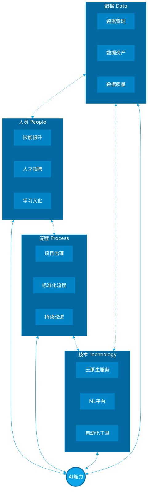
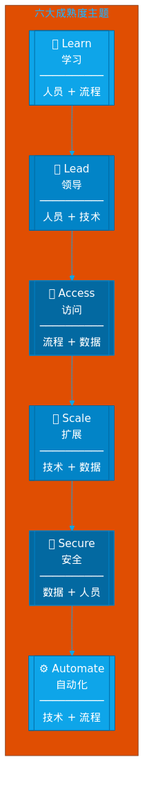
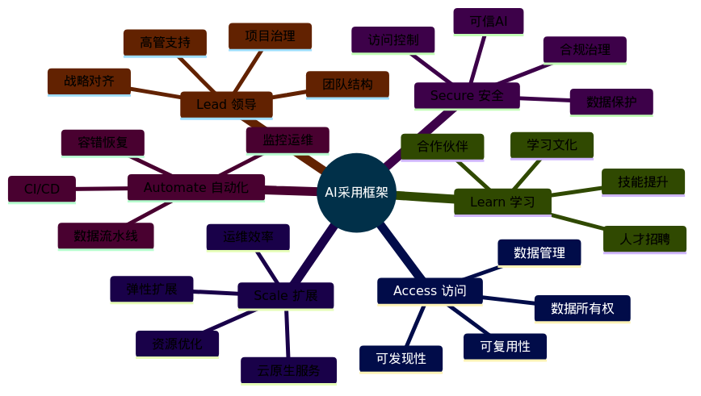
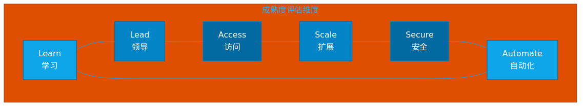
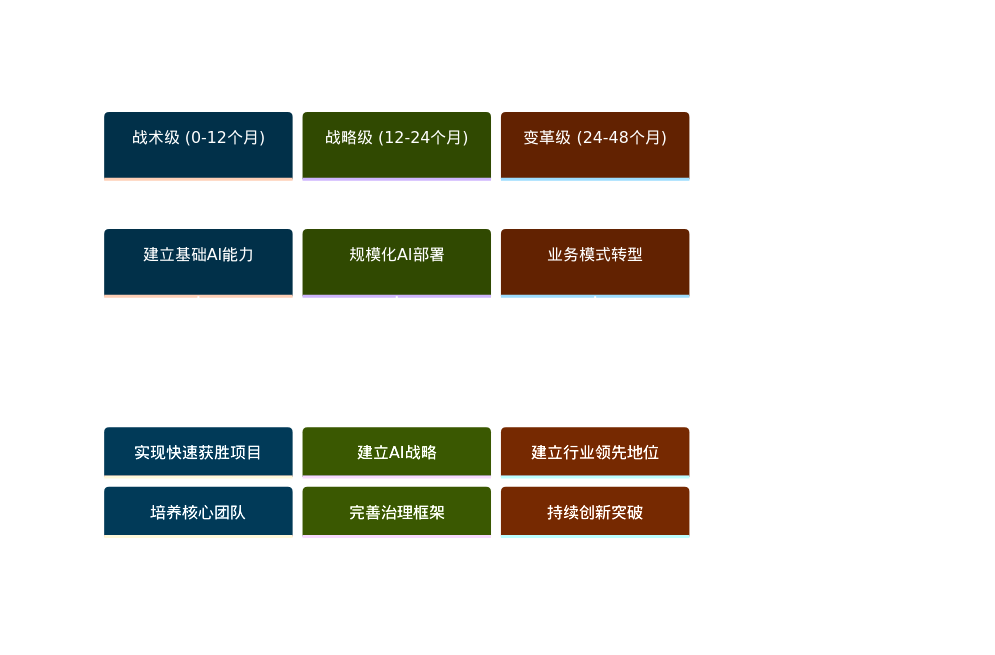

企业AI转型成熟度模型与实践指南
Google Cloud的AI采用框架为企业提供了一套完整的AI成熟度评估和发展指南。该框架基于Google自身在AI领域的创新和领导地位，以及多年帮助云客户解决复杂挑战的经验。
"那些投资构建行业特定AI解决方案的企业，正在将自己定位为未来的全球经济领导者。"
AI的核心能力包括在复杂数据集中发现模式、解决复杂问题（视觉感知、语音识别等）、实现数据驱动的决策和规模化执行。
| 行业 | 应用场景 | 价值 |
|---|---|---|
| 制造业 | 预测性维护 | 优化资本支出 |
| 金融业 | 风险分析增强 | 提升风控能力 |
| 零售/媒体 | 客户体验个性化 | 提升客户满意度 |
| 旅游业 | 动态定价预测 | 优化收益管理 |
| 因素 | 变化 |
|---|---|
| 数据存储成本 | 指数级下降 |
| 计算能力 | 指数级提升 |
| AI专用硬件 | 性价比大幅改善 |
| 云计算 | 降低准入门槛 |
| 工具/算法 | 更智能、更有效 |
Google Cloud的AI采用框架基于经典的人员、流程、技术、数据四大领域：

图1：AI采用框架核心架构 - 四大领域协同
四大领域的交互产生六大主题：

图2：六大成熟度主题及其关系

图3：六大主题详细内容思维导图
| 主题 | 跨越领域 | 核心关注点 |
|---|---|---|
| Learn 学习 | 人员 + 流程 | 技能提升、人才招聘、合作伙伴关系 |
| Lead 领导 | 人员 + 技术 | 高管支持、团队结构、项目治理 |
| Access 访问 | 流程 + 数据 | 数据管理、资产共享、模型复用 |
| Scale 扩展 | 技术 + 数据 | 云原生服务、弹性扩展、资源调配 |
| Secure 安全 | 数据 + 人员 | 数据保护、访问控制、可信AI |
| Automate 自动化 | 技术 + 流程 | CI/CD、流水线、监控运维 |
核心问题：
| 实践领域 | 具体内容 |
|---|---|
| 技能提升 | 培训计划质量与规模 |
| 人才招聘 | 数据科学/ML工程角色配置 |
| 合作伙伴 | 与经验丰富的AI伙伴合作 |
| 学习文化 | 持续学习与知识分享 |
核心问题：
| 实践领域 | 具体内容 |
|---|---|
| 高管支持 | 领导层对ML应用的授权 |
| 团队结构 | 跨职能、协作、自驱动 |
| 项目治理 | 预算分配、进度跟踪、价值评估 |
| 战略对齐 | AI项目与业务目标一致 |
核心问题：
| 实践领域 | 具体内容 |
|---|---|
| 数据管理 | 数据集创建、管理、标注流程 |
| 数据所有权 | 明确数据资产归属 |
| 可发现性 | 数据资产目录与搜索 |
| 可复用性 | ML工件共享与复用机制 |
核心问题：
| 实践领域 | 具体内容 |
|---|---|
| 云原生服务 | 使用可扩展的ML服务 |
| 弹性扩展 | 处理大量数据和ML作业 |
| 运维效率 | 降低运维开销 |
| 资源优化 | 按需配置、成本控制 |
核心问题：
| 实践领域 | 具体内容 |
|---|---|
| 数据保护 | 防止未授权和不当访问 |
| 访问控制 | 身份认证、权限管理 |
| 可信AI | 负责任、可解释的AI |
| 合规治理 | 法规遵从、审计追踪 |
核心问题：
| 实践领域 | 具体内容 |
|---|---|
| CI/CD | 自动化部署流程 |
| 数据流水线 | 数据处理和ML流水线 |
| 监控运维 | 日志、监控、告警 |
| 容错恢复 | 故障容忍、断点续传 |
图4：AI成熟度三阶段演进模型
| 阶段 | 特征 | 焦点 |
|---|---|---|
| Tactical 战术级 | 简单用例、短期、狭窄 | 快速获胜、最小干扰 |
| Strategic 战略级 | 可持续业务价值、多系统部署 | 业务价值、规模化 |
| Transformational 变革级 | AI驱动业务模式、行业领先 | 创新突破、竞争优势 |
| 主题 | 战术级 | 战略级 | 变革级 |
|---|---|---|---|
| Learn | 基础培训、有限外部支持 | 系统化培训、专业团队 | AI人才中心、行业领先 |
| Lead | 项目驱动、缺乏高管支持 | 高管赞助、跨职能团队 | AI驱动战略、组织变革 |
| Access | 数据孤岛、难以共享 | 数据目录、资产共享 | 数据驱动文化、知识共享 |
| Scale | 手动配置、资源受限 | 云原生服务、弹性扩展 | 全球规模、极致优化 |
| Secure | 基础安全措施 | 全面安全策略、合规框架 | 可信AI、行业标杆 |
| Automate | 手动流程、缺乏自动化 | CI/CD流水线、自动化运维 | 智能运维、自愈系统 |

图6：成熟度评估六大维度
| 主题 | 战术级 (1分) | 战略级 (2分) | 变革级 (3分) | 得分 |
|---|---|---|---|---|
| Learn | 基础培训 | 系统化培训 | 人才中心 | ___ |
| Lead | 项目驱动 | 高管赞助 | AI驱动战略 | ___ |
| Access | 数据孤岛 | 数据目录 | 数据驱动文化 | ___ |
| Scale | 手动配置 | 云原生服务 | 全球规模 | ___ |
| Secure | 基础安全 | 全面策略 | 可信AI标杆 | ___ |
| Automate | 手动流程 | CI/CD流水线 | 智能运维 | ___ |
| 总分 | ___/18 | |||

图5：AI成熟度演进路线图
| 因素 | 战术级→战略级 | 战略级→变革级 |
|---|---|---|
| 人员 | 建立专业团队 | 培养AI人才中心 |
| 流程 | 标准化AI流程 | AI驱动业务流程 |
| 技术 | 云原生ML平台 | 全球规模基础设施 |
| 数据 | 数据资产目录 | 数据驱动文化 |
| 陷阱 | 表现 | 规避策略 |
|---|---|---|
| 技术驱动 | 过度关注技术而非业务价值 | 从业务问题出发 |
| 数据忽视 | 低估数据质量和治理重要性 | 建立数据管理流程 |
| 人才短缺 | 缺乏AI专业人才 | 投资培训和招聘 |
| 高管缺位 | 缺乏领导层支持 | 建立高管赞助机制 |
| 安全忽视 | 忽视AI安全和伦理 | 建立可信AI框架 |
Google Cloud的AI采用框架为企业提供了一套系统化的AI成熟度评估和发展指南。通过六大主题（Learn、Lead、Access、Scale、Secure、Automate）和三阶段成熟度模型（Tactical、Strategic、Transformational），企业可以：
"那些投资构建行业特定AI解决方案的企业，正在将自己定位为未来的全球经济领导者。"
| 术语 | 定义 |
|---|---|
| AI | 能够执行通常需要人类智能的任务的系统理论与开发 |
| ML | 通过自动发现数据中的有用模式来构建AI系统的有效方法 |
| MLOps | 机器学习运维，ML系统的部署、监控和维护实践 |
| CI/CD | 持续集成/持续部署，自动化软件交付流程 |
| Grounding | 将模型与企业数据或搜索结果连接以减少幻觉 |
| PEFT | Parameter-Efficient Fine-Tuning，参数高效微调 |
| Vertex AI | Google Cloud的统一AI平台 |